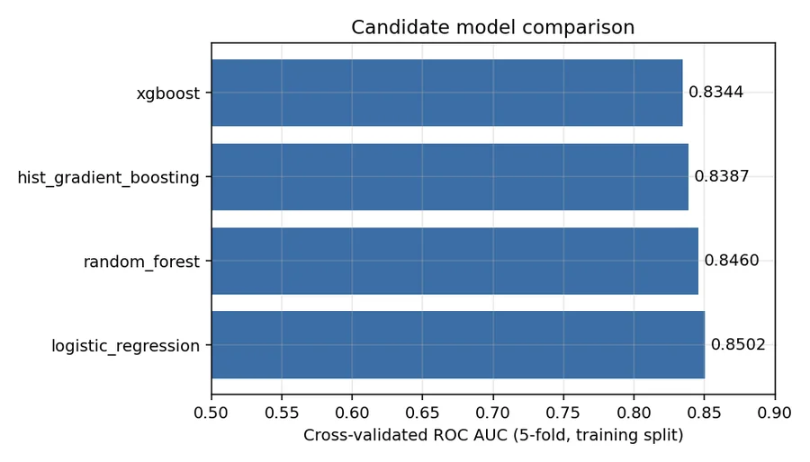
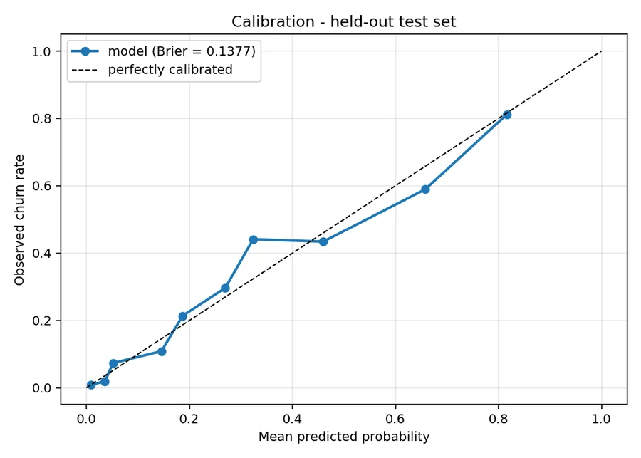

Telecoms · retention · MLOps
Customer Churn MLOps Platform
A threshold chosen from retention economics rather than the default 0.5 was worth +19.7% campaign profit — on exactly the same model.

Most churn projects end at a notebook with an AUC in it. This one is about the other 90%: a reproducible training pipeline, experiment tracking with a working model registry, a validated inference API, a container image, CI that gates every push, and drift monitoring that stays quiet until something actually moves.
Accuracy is deliberately not the headline. Predicting that nobody churns scores 73.5% on this dataset while being worth exactly nothing.
The simplest model won, and that is the finding
Four candidates were cross-validated on the training split alone. Logistic regression came first.
| Model | CV ROC AUC | Std |
|---|---|---|
| Logistic regression | 0.8502 | ±0.0129 |
| Random forest | 0.8460 | ±0.0118 |
| Hist gradient boosting | 0.8387 | ±0.0126 |
| XGBoost | 0.8344 | ±0.0114 |
With roughly 4,200 training rows, 16 of 19 features categorical, and a mostly additive signal — short tenure, month-to-month, fibre, electronic check — there is little interaction structure for a tree ensemble to find that one-hot encoding plus a linear boundary does not already capture. The extra capacity buys variance instead of signal.
Shipping the boosted model anyway would have meant a slower, less interpretable, worse system. The pipeline picks the champion on cross-validated score, so this conclusion is reproducible rather than asserted.

The threshold is a business decision, not 0.5
A default 0.5 cut-off silently assumes a false positive and a false negative cost the same. They do not. Given a $20 retention offer, a $200 customer value and a 35% offer-acceptance rate, expected campaign profit is:
profit = TP × ($200 × 0.35) − (TP + FP) × $20
Maximising that over the validation split gives 0.27, not 0.5 — worth +$1,470, or +19.7%, on 1,409 held-out customers. The economics live in the config file, so changing the offer cost re-derives the threshold.
The threshold is tuned on validation and the test split is scored exactly once. Tuning it on test is the most common way these numbers get quietly inflated.

Calibrated probabilities, not class re-weighting
The usual reflex for a 26.5% base rate is class_weight="balanced". That distorts the output into a score which no longer means "probability of churn" — which breaks the profit arithmetic above.
Instead the champion is refit on train and isotonically calibrated on the untouched validation split. The resulting Brier score is 0.138 and the calibration curve tracks the diagonal, so a predicted 0.30 really does mean roughly 30% of those customers churn. That is what makes the expected-value calculation valid rather than decorative.

A pickled model is not a portable artefact
CI caught this on its first real run. The requirements said scikit-learn>=1.3, CI resolved 1.9.0, and the committed artefact — pickled on 1.7.0 — unpickled with nothing but a warning and then failed deep inside CalibratedClassifierCV.predict_proba, with a traceback pointing at scikit-learn internals rather than at the actual cause.
Two changes, because both halves were wrong. The dependency is now pinned to >=1.7,<1.8 — this repository is an application that ships a serialised model, not a library, so the serving environment has to be pinned rather than lower-bounded. And the bundle records the versions that trained it, comparing them on load and raising one legible sentence naming the mismatch.
The same class of bug appeared in the other direction: the pipeline's dtype == object check for the target silently stopped working on pandas 3, which reads text columns as str. Both regressions now have tests that reproduce the newer library's behaviour on the older one.
Drift alerts a team will not learn to ignore
The detector compares a reference window against a current one using PSI for effect size plus KS and chi-square tests for significance.
| Window | Status | Features flagged | Prediction PSI |
|---|---|---|---|
| Stable — resampled from the same distribution | OK | 0 / 19 | 0.005 |
| Shifted — 18% price rise, mix change, younger tenure | ALERT | 5 / 19 | 0.557 |
The first row is the one that took work. Testing 19 features at α = 0.05 produces roughly one spurious flag on every clean window — and the first version of this detector did exactly that, flagging OnlineBackup at p = 0.034 while its PSI was 0.004, meaning no drift at all.
The fix was a Bonferroni correction on the p-value threshold, and treating PSI as the primary signal. A hypothesis test only reports that a shift is detectable, and at production sample sizes everything is detectable. A monitor that cries wolf weekly gets muted, and then it is worth less than no monitor.
What this does not support
- The dataset is a static snapshot with no real timestamps, so the drift experiment injects a simulated shift. It demonstrates that the detector works; it is not evidence of drift in the wild.
- The retention economics are illustrative. The $20 / $200 / 35% figures are plausible placeholders — the transferable part is the machinery that turns them into a threshold.
- ROC AUC ≈ 0.84 is near the ceiling for these features. Published results on this dataset cluster in 0.83–0.86; meaningful gains need usage and support-ticket history, not more tuning.
- No live retraining trigger. The drift report is generated on demand; wiring it to a scheduler that retrains on ALERT is the natural next step.